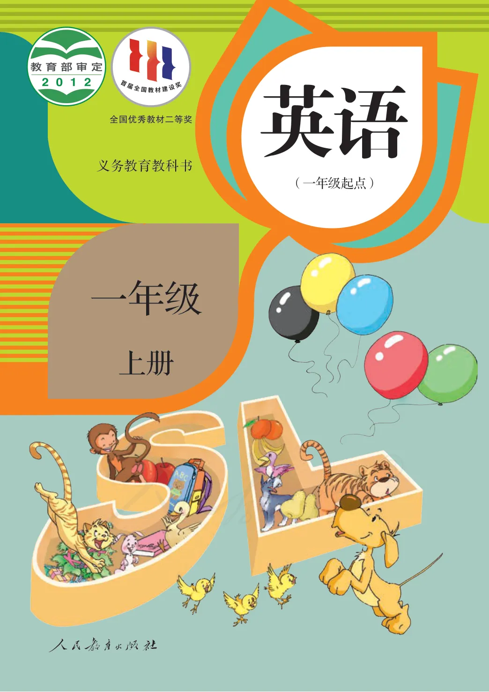

英语 一年级上册
义务教育教科书
🔍
Starter Unit
Greetings & Introductions
认识主要人物角色并学习基础英语打招呼与自我介绍用语 (P5 - P8)
Main Characters 主角人物
P5 📄
点击人物名字播放本地提取音轨：
Miss Wu (吴老师) 🎵
Bill 🎵
Lily 🎵
Yaoyao 🎵
Binbin 🎵
Andy 🎵
Lucky (小狗) 🎵
Angel (小仙女) 🎵
Morning Greetings 问好
P7 📄
Miss Wu: Good morning! I’m Miss Wu.
早上好！我是吴老师。
Miss Wu: What’s your name?
你叫什么名字？
Bill: Hello! My name is Bill.
你好！我的名字叫Bill。
Afternoon & Farewell 下午好与道别
P8 📄
Bill: Good afternoon, Miss Wu.
下午好，吴老师。
Miss Wu: Hi, Bill.
嗨，Bill。
Friends: Bye, Bill. Goodbye.
再见，Bill。再见！
←
START OF COURSE
📌 Starter (Greetings)
Starter Unit • P5-8
Unit 1
School (学校)
学习学校文具词汇及表达拥有文具的句型 (P9 - P16)
核心词汇 Vocabulary
book 🎵
/bʊk/
书，书本
ruler 🎵
/ˈruːlə/
尺子
pencil 🎵
/ˈpensl/
铅笔
eraser 🎵
/ɪˈreɪzə/
橡皮
schoolbag 🎵
/ˈskuːlbæɡ/
书包
Lesson 1: Chant & Actions
P11 📄
Part A: Look, listen and chant. (看、听与歌谣)
Part B: Show me your ruler. (出示你的尺子)
Action: Show me your pencil. (出示你的铅笔)
Lesson 2: Key Sentence Pattern
P12 📄
Bill: I have a ruler. (我有一把尺子。)
Lily: I have a pencil. (我有一支铅笔。)
Yaoyao: I have a schoolbag. (我有一个书包。)
Story Time (故事时间)
P15-16 📄
Angel: Show me your schoolbag. Open it.
Bill: I have a schoolbag.
Angel: Hi! I’m Angel.
Unit 1 of 6 • P9-16
Unit 2
Face (五官)
学习身体五官名称及 Touch 动作指令 (P17 - P24)
核心词汇 Vocabulary
face 🎵
/feɪs/
脸
eye 🎵
/aɪ/
眼睛
ear 🎵
/ɪə/
耳朵
nose 🎵
/nəʊz/
鼻子
mouth 🎵
/maʊθ/
嘴巴
Lesson 1: Touch Actions
P19 📄
Action: Touch your mouth. (摸摸你的嘴巴。)
Action: Touch your nose. (摸摸你的鼻子。)
Action: Touch your eye. (摸摸你的眼睛。)
Lesson 2: This is my...
P20 📄
Dialogue: This is my mouth. (这是我的嘴巴。)
Dialogue: This is my nose. (这是我的鼻子。)
Dialogue: This is my ear. (这是我的耳朵。)
Unit 2 of 6 • P17-24
Unit 3
Animals (动物)
学习常见的动物英文名称及问答句型 What's this? (P25 - P32)
核心词汇 Vocabulary
cat 🎵
/kæt/
猫
dog 🎵
/dɒɡ/
狗
bird 🎵
/bɜːd/
鸟
monkey 🎵
/ˈmʌŋki/
猴子
tiger 🎵
/ˈtaɪɡə/
老虎
panda 🎵
/ˈpændə/
熊猫
Lesson 2: What's this?
P28 📄
Question: What’s this? — It’s a tiger. (这是什么？这是一只老虎。)
Question: What’s this? — It’s a dog. (这是什么？这是一只狗。)
Question: What’s this? — It’s a bird. (这是什么？这是一只鸟。)
Unit 3 of 6 • P25-32
Revision 1
Revision 1: Safety Island Game
阶段复习 1 (Unit 1 ~ Unit 3) 综合拓展与游戏 (P33 - P34)
Safety Island 安全岛关卡句型P34 📄
What’s this? — This is my pencil.
Show me your book.
Touch your nose.
Revision 1 • P33-34
Unit 4
Numbers (数字 1 - 10)
学习英文数字 1-10 及数量询问句型 How many... are there? (P35 - P42)
核心词汇 Vocabulary
one (1) 🎵
two (2) 🎵
three (3) 🎵
four (4) 🎵
five (5) 🎵
six (6) 🎵
seven (7) 🎵
eight (8) 🎵
nine (9) 🎵
ten (10) 🎵
Lesson 2: How many?P38 📄
Question: How many tigers are there? (有多少只老虎？)
Answer: Five tigers. (5只老虎。)
Unit 4 of 6 • P35-42
Unit 5
Colours (颜色)
学习常见色彩英文及问答句型 What colour is it? (P43 - P50)
核心词汇 Vocabulary
red (红色) 🎵
yellow (黄色) 🎵
blue (蓝色) 🎵
green (绿色) 🎵
black (黑色) 🎵
Lesson 2: What colour is it?P46 📄
Question: What colour is it? — It’s yellow. (这是什么颜色？是黄色。)
Answer: It’s black. (是黑色。)
Unit 5 of 6 • P43-50
Unit 6
Fruit (水果)
学习常见水果词汇及表达喜好的句型 Do you like...? (P51 - P58)
核心词汇 Vocabulary
apple (苹果) 🎵
banana (香蕉) 🎵
pear (梨) 🎵
orange (桔子) 🎵
Lesson 2: Do you like...?P54 📄
Question: Do you like bananas? — Yes, I do. (你喜欢香蕉吗？是的，我喜欢。)
Question: Do you like pears? — No, I don’t. (你喜欢梨吗？不，我不喜欢。)
Unit 6 of 6 • P51-58
Revision 2
Revision 2: Board Game & Review
阶段复习 2 (Unit 4 ~ Unit 6) 综合棋盘游戏与核心问答句型 (P59 - P60)
Safety Island 1: Fruit & Preferences (水果与喜好问答)P59 📄
Question: Do you like apples? — Yes, I do. (你喜欢苹果吗？是的，我喜欢。)
Question: Do you like bananas? — Yes, I do. (你喜欢香蕉吗？是的，我喜欢。)
Question: Do you like pears? — No, I don't. (你喜欢梨吗？不，我不喜欢。)
Safety Island 2: Colours & Recognition (颜色辨识与询问)P59 📄
Question: What colour is it? — It’s red. (它是什么颜色的？是红色的。)
Question: What colour is it? — It’s yellow. (它是什么颜色的？是黄色的。)
Answer: It’s black. (它是黑色的。)
Safety Island 3: Numbers & Counting (数量数数关卡)P60 📄
Question: How many tigers are there? (那里有多少只老虎？)
Answer: Five. (5只。)
Revision 2 • P59-60
附录一 Appendix 1
歌谣与歌曲 (Chants & Songs)
全册 6 个单元的经典歌谣与本地音轨朗读 (P61 - P62)
Unit 1 Chant: Hello, Pencil!P61 📄
Hello, pencil! Hello, ruler! Hello, schoolbag! Hello!
Unit 3 Song: Two Little Black BirdsP62 📄
Two little black birds sitting on a hill.
One named Jack, one named Jill.
One named Jack, one named Jill.
Fly away Jack! Fly away Jill!
Come back Jack, come back Jill!
Come back Jack, come back Jill!
Appendix 1 • P61-62
附录二 Appendix 2
单元词汇表 (Vocabulary List)
全册重点单词发音与中文对照 (P63 - P66)
Appendix 2 • P63-66
附录三 Appendix 3
常用表达法 (Everyday Expressions)
日常问候与课堂常用交际用语 (P67)
Greetings 问候语P67 📄
Good morning! (早上好！)
Good afternoon! (下午好！)
Hello! / Hi! (你好！)
Appendix 3 • P67

第 1 / 78 页